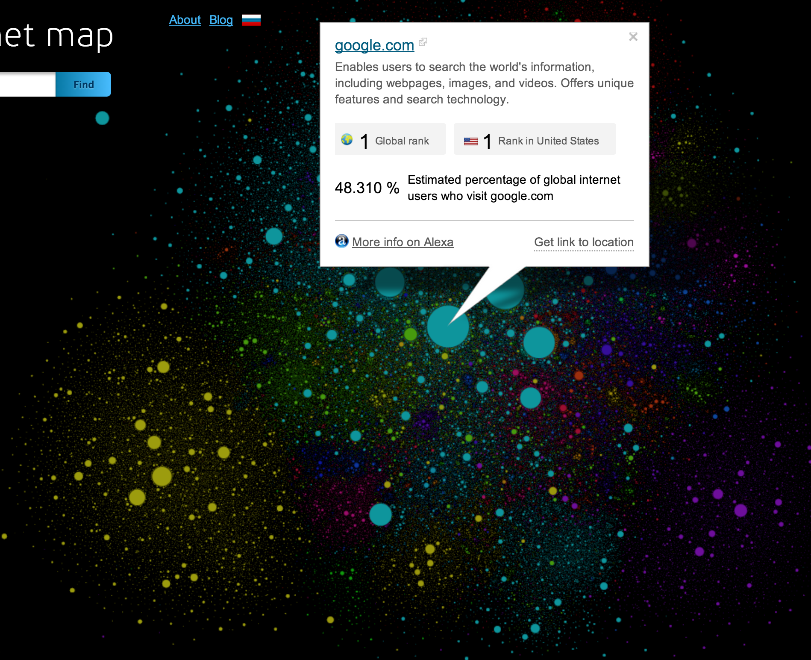
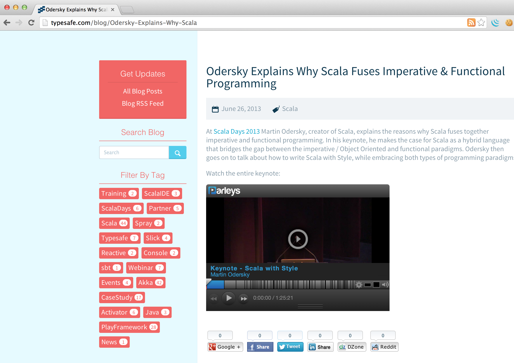
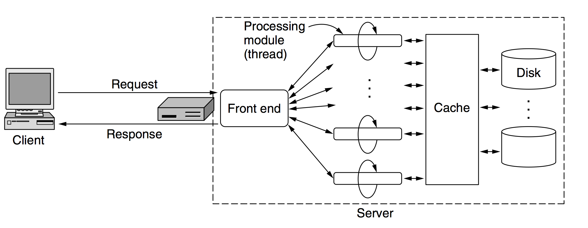
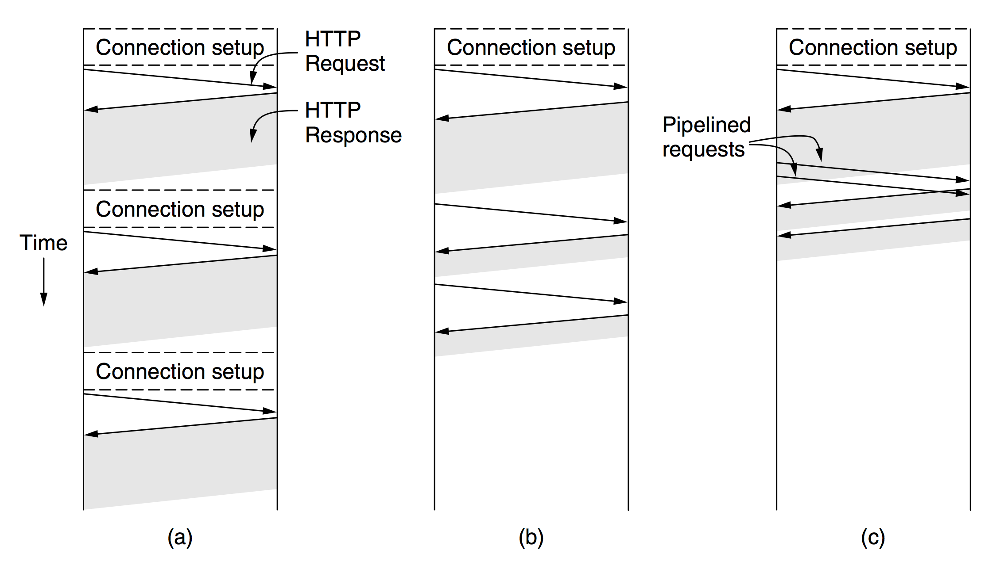
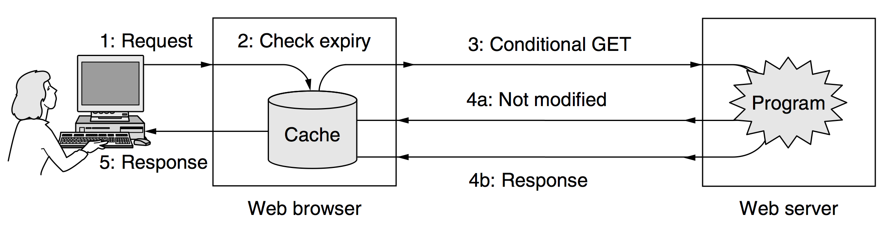

World wide web
HTTP protocol
© 2014 Sergey KraucheniaИнтернет в 2005 году

internet-map.net
World Wide Web Consortium
- W3C
- организация, разрабатывающая и внедряющая технологические стандарты для Всемирной паутины
- лучший источник знаний о сети. Их сайт - w3c.org
World Wide Web
Пример страницы
Client side
- Клиентом выступает браузер
- пример: Chrome, firefox, opera, safari
- Internet Explorer
- программа для скачивания браузеров
URL (1/2)
Uniform resource locator
URL состоит из трех частей:
- протокол
- доменное имя сервера
- путь к странице
URL (2/2)
Пример
http://www.google.ru/intl/ru/about/index.html
- protocol - http
- DNS имя - www.google.ru
- путь - /intl/ru/about/index.html
Что же произойдет, если я кликну по ссылке?
- Браузер определяет URL
- Браузер спрашивает у DNS по имени www.google.ru IP сервера
- DNS отвечает 74.125.131.94
- Браузер устанавливает TCP соединение с 74.125.131.94 на порту 80 (по умолчанию для протокола HTTP)
- Браузер посылает запрос по HTTP, запрашивая страницу /intl/ru/about/index.html
- www.google.ru возвращает HTTP ответ
- Если на странице есть другие URL’ы, которые нужно подгрузить, браузер повторяет процесс и для них
- Браузер отображает страницу
- TCP соединение закрывается
MIME-типы
| Тип | Пример подтипа | Описание |
|---|---|---|
| text | plain, html, xml, css | Тексты в разном формате |
| image | gif, jpeg, tiff | картинки |
| audio | basic, mpeg, mp4 | звуки |
| video | mpeg, mp4, quicktime | видео |
| application | octet-stream, pdf, javascript, zip | данные, произведенные приложением |
HTML (1/2)
HyperText Markup Language
Язык HTML интерпретируется браузерами и отображается в виде документа в удобной для человека форме
HTML (2/2)
Пример:
<html>
<head>
<title>Sample</title>
</head>
<body>
<h1>Hello, world</h1>
</body>
</html>
Server side
Основные шаги, которые делает сервер после того, как клиент отправил запрос
- Принимает TCP соединение от клиента (браузера)
- Достает из запроса путь к странице
- Получает доступ к странице на диске или, если это динамический ресурс, выполняет команду, которая подготавливает страницу
- Посылает файл обратно клиенту
- Освобождает соединение
Простой пример архитектуры сервера (1/2)
(2/2)
Шаги, которые может предпринимать модуль-обработчик:
- Определяет имя запрашиваемой страницы
- Проверяет права доступа
- Проверяет кэш на наличие закешированных данных
- Получает запрошенную страницу с диска или вызывает обработчик, который ее сгенерирует
- Конструирует остаток ответа (MIME-тип и т.д.)
- Возвращает ответ клиенту
- Логирует информацию о проделанной работе
HTTP
HyperText Transfer Protocol - протокол передачи гипертекста
Соединение (TCP:80)
Соединение
- (b) persistent connections (постоянное соединение)
- после того, как получена страница, позволяет переиспользовать открытое соединение для оставшихся запросов
- (c) HTTP pipelining (конвейерная обработка запросов)
- позволяет посылать запрос номер 2 еще до того, как запрос номер 1 получил ответ
HTTP методы
HTTP определяет список стандартных типов запроса (методов)
HTTP запрос состоит из нескольких строк текста, содержащих ASCII символы. Первое слово первой строки всегда должно быть имя метода. Имена чувствительны к региструПример:
GET /index.html HTTP/1.1Список методов:
- GET - Используется для запроса содержимого указанного ресурса
- HEAD - Запрашивает заголовки запрашиваемого ресурса
- POST - Применяется для передачи пользовательских данных заданному ресурсу
- PUT - Применяется для загрузки содержимого запроса на указанный в запросе URI
- DELETE - Удаляет указанный ресурс
- TRACE - Возвращает полученный запрос так, что клиент может увидеть, какую информацию промежуточные серверы добавляют или изменяют в запросе
- OPTIONS - Используется для определения возможностей веб-сервера
Метод GET
Примеры:
GET index.html HTTP/1.1Можно указывать дополнительные параметры после знака вопроса, разделяя их амперсандом
GET /path/resource?param1=value1¶m2=value2 HTTP/1.1Метод POST
Используется обычно для отправки пользовательских данных с формы на сервер
Пример:
Начальная строка:
POST / HTTP/1.1Заголовки:
Host: www.example.com
Connection: keep-alive
Cache-Control: max-age=0
Accept: text/html,application/xhtml+xml,application/xml;q=0.9,*/*;q=0.8
User-Agent: Mozilla/5.0 (X11; Linux i686) AppleWebKit/537.17 (KHTML, like Gecko) Chrome/24.0.1312.68 Safari/537.17
Accept-Encoding: gzip,deflate,sdch
Accept-Language: en-US,en;q=0.8,ru;q=0.6
Accept-Charset: ISO-8859-1,utf-8;q=0.7,*;q=0.3
Обязательная пустая строка:
Тело сообщения:
param1=value1¶m2=value2
HTTP Response
Пример 1:
HTTP/1.1 200 OK- 1.1
- версия протокола
- 200
- статус-код ответа
- OK
- текстовое короткое пояснение к коду
Пример 2:
Начальная строка:
HTTP/1.1 200 OKЗаголовки
Server: nginx/1.2.1
Date: Fri, 08 Feb 2013 11:04:05 GMT
Content-Type: text/html;charset=utf-8
Transfer-Encoding: chunked
Connection: keep-alive
Status: 200
Content-Encoding: gzipОбязательная пустая строка
Тело сообщения
<html>
<head>
...
</head>
<body>
...
</body>
</html>Группы статус-кодов
- 1xx — информационные
- 2xx — успешные
- 3xx — перенаправление
- 4xx — ошибки клиента
- 5xx — ошибки сервера
Наиболее частые статусы:
- 200 OK
- 403 Forbidden
- 404 Not Found
- 502 Bad Gateway
- 504 Gateway Timeout
Заголовки сообщений (1/5)
- User-Agent
- позволяет сообщить серверу какой браузер использует клиент
- Accept, Accept-Charset, Accept-Encoding, Accept-Language
- говорят серверу, что клиент хотел бы принимать
- If-Modified-Since и If-None-Match
- используется в кешировании
Заголовки сообщений (2/5)
- Host
- содержит имя сервера и является обязательным
- Authorization
- используется для тех случаев, когда доступ к странице ограничен
- Referer
- откуда пользователь пришел
Заголовки сообщений (3/5)
- Set-Cookie, Cookie
- позволяет управлять куками
- Content-Encoding, Content-Language, Content-Length, Content-Type, Content-Range
- позволяют серверу описать контент, который он посылает клиенту
- Last-modified
- дата последнего изменения страницы
Заголовки сообщений (4/5)
- Expires
- когда страница перестанет быть актуальной
- Location
- сообщить клиенту какой URL ему следует использовать
- Range
- диапазон запрашиваемого контента
Заголовки сообщений (5/5)
- Date
- дата и время запроса или ответа
- Etag
- короткий идентификатор страницы
- Cache-Control
- стратегия управления кешем
Кеширование:
Какие стратегии можно использовать для кеширования?
- Использование заголовка Expires
- Conditional GET
Conditional GET (1/2)
Conditional GET (2/2)
Какие заголовки можно использовать, чтобы составить Conditional GET:
- If-Modified-Since
- If-Unmodified-Since
- If-Match
- If-None-Match
- If-Range
Cache-Control
Сервер может явным образом установить поведение, касающееся кеширования или скорее некеширования, используя Cache-Control. Выставив значение в no-cache, сервер даст понять клиенту, что не хочет, чтобы контент кешировали.Используем Java чтобы послать запрос на сервер
try {
URL url = new URL("http://www.gutenberg.org/cache/epub/3537/pg3537.txt");
HttpURLConnection connection = (HttpURLConnection) url.openConnection();
connection.setRequestMethod("GET");
connection.setRequestProperty("Accept", "text/html");
BufferedReader in = new BufferedReader(new InputStreamReader(connection.getInputStream()));
String inputLine;
while ((inputLine = in.readLine()) != null) {
System.out.println(inputLine);
}
in.close();
} catch (Exception e) {
e.printStackTrace();
}
Практические задания
- Приведенный пример на Java не совсем рабочий. Исправьте его таким образом, чтобы в итоге текст книги печатался в консоль
- Выведите в консоль все заголовки ответа